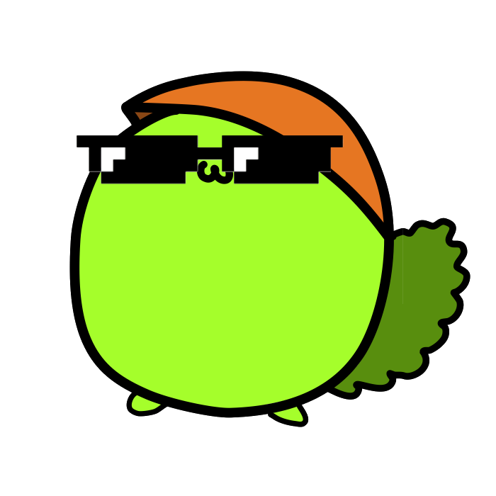

柏陽詐欺チェッカー
柏陽詐欺をしているかどうかを確認できます。
Q．柏陽詐欺とは
A．柏陽生が自分の成績を低く見積もって第三者に伝え、安心感を与えたのち好成績を出し相手のメンタルをへし折る行為の総称。
使用例：テスト前「私勉強してないからテスト10点かも！」
実際「なんか80点取れてたうれしい！」
PUSH
入力された情報は僕の自己満足のために使用することがあるので、ニックネーム等用いることをおすすめします。